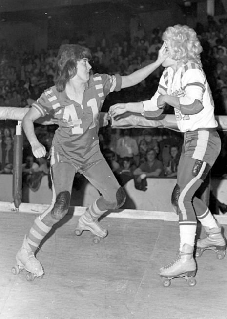

Roller derby is a fast-paced, full-contact sport played on quad roller skates. Each game is two, 30-minute periods composed of two minute plays, or “jams.” Each team starts with four skaters playing defense (“blockers”) and one player playing offense (“jammer”).The jammer must pass each opposing blocker upright and in-bounds in order to make a legal lap. The first jammer to make it past the group of blockers (the “pack”) on their initial lap is designated as “lead jammer,” and has the power to stop the jam before two minutes are up. After the initial lap, jammers accumulate one point for every opposing blocker they pass.
from the Minnesota Roller Derby site
Roller derby began in the 1930s as skating marathons during the Great Depression. Promoter Leo Seltzer discovered that the events were more exciting when the skaters would push and shove one another to gain position. He began to market these as a full-contact sport.
 Roller derby experienced a revival in the 1970s and was often shown on Saturday afternoon TV. Most recently, a group of women in Austin, Texas in the early 2000s created the modern iteration of the sport. Currently, there are over 500 leagues on 6 continents playing the modern, flat-track version of the game.